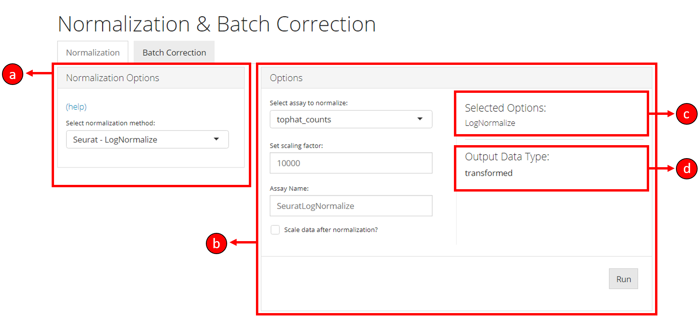
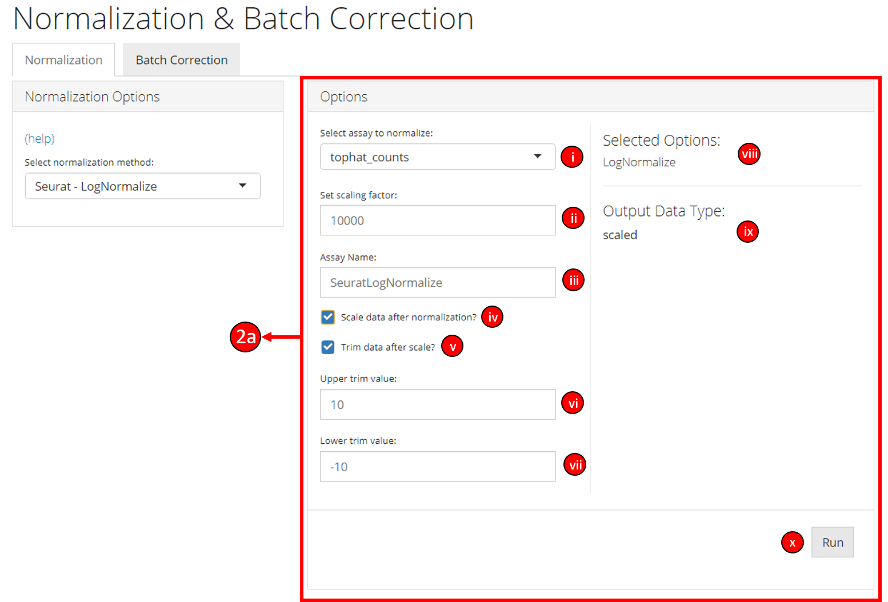

Normalization
Irzam Sarfraz
Source:vignettes/articles/cnsl_normalization.Rmd
cnsl_normalization.RmdIntroduction
singleCellTK offers a convenient way to normalize data for downstream analysis using a number of methods available through the toolkit. The integrated normalization methods and other transformation options can be used through both R console and interactive shiny application. Normalization methods available with the toolkit include "LogNormalize", "CLR", "RC" & "SCTransform" from Seurat [1][2][3][4] package and "logNormCounts" or "CPM" from Scater [5] package. Additional transformation options are available for users including ‘log’ & ‘log1p,’ trimming of data assays and Z-Score scaling.
To view detailed instructions on how to use these methods, please select ‘Interactive Analysis’ for using normalization in shiny application or ‘Console Analysis’ for using these methods on R console from the tabs below:
Workflow Guide
Normalization tab can be opened up by clicking on the Normalization & Batch Correction from the top menu and further selecting the Normalization sub-tab in the subsequent window as shown below.

Normalization tab is divided up into 4 sections as shown in the screenshot below:

The section a lets you choose a normalization method, whereas the section b allows for various options to be modified and selected for a particular normalization method selected from section a. The section c displays the overall methods/options selected for this instance of normalization process. The section d displays the output data type once the normalization is run. This output data type represents the nature of the data that will be output based on the selected options. For example, output data type maybe transformed if transformation options are selected including normalization methods, or maybe scaled if the scale option is selected. The section c and d update automatically based on normalization method and options selected by the user.

1. Select a normalization method or select Custom Normalization to manually select the options for normalization including transformation, trimming & scaling.

2a. Options when a normalization method from a particular package is selected:
i. Select the assay from the data to normalize.
ii. Set scaling factor for this particular method. These options may vary between different normalization methods. See method specific documentation for more information.
iii. Specify the name of the output data assay.
iv. Select if data should be scaled after running the normalization method.
v. Select if data should be trimmed between two values running the normalization method.
vi & vii. If trim data option is selected, specify the upper and lower trim values. The output data is then trimmed between these two values (inclusive).
viii: The user-interface displays the selected options or methods based on the user selected normalization method.
ix. The output data type based on the selected user options is displayed.
x. Click the button to run the normalization process.

2b. Options when a custom normalization is selected:
i. Select the input data assay to use as an input with selected normalization/transformation options.
ii. Specify the name of the put data assay.
iii. Select if data should be normalized (multiple normalization methods will display once this option is selected).
iv. Select if a pseudo value should be added to the data.
v. Select if the data should be scaled.
vi. Select if the data should be trimmed between two values.
vii. The user-interface displays the selected options or methods based on the user selected normalization method.
viii. The output data type based on the selected user options is displayed.
ix. Click the button to run the normalization process.
The singleCellTK allows the users to run all normalization and transformation methods on the input data by using a single runNormalization function. The runNormalization function takes in input a SingleCellExperiment object and a series of parameters that define the normalization/transformation options to run on the specified assay. The output of this function is a SingleCellExperiment object which now contains the normalized/transformed assay.
To use the function, input a SingleCellExperiment object that contains the data assay and specify the required parameters:
sce <- runNormalization(inSCE = sce, normalizationMethod = "RC", useAssay = "counts", outAssayName = "RCLogScaledCounts", scale = TRUE, transformation = "log2", pseudocountsBeforeTransform = 1, trim = c(10, -10))Example
# Load singleCellTK & pbmc3k example data
library(singleCellTK)
sce <- importExampleData(dataset = "pbmc3k")
# Perform normalization
sce <- runNormalization(inSCE = sce, normalizationMethod = "RC", useAssay = "counts", outAssayName = "RCLogScaledCounts", scale = TRUE, transformation = "log2", pseudocountsBeforeTransform = 1, trim = c(10, -10))Parameters
The runNormalization function specifies the following parameters:
| Parameter | Description |
|---|---|
| inSCE | Input SingleCellExperiment object. |
| useAssay | Specify the input assay to use for normalization/transformation. |
| outAssayName | A character value indicating the name of the new output assay. |
| normalizationMethod | Specify a normalization method from "LogNormalize", "CLR", "RC", "SCTransform", "logNormCounts" or "CPM". If no method is specified, normalization will not be performed. |
| scale | Logical value indicating if Z.Score scaling should be performed or not. |
| seuratScaleFactor | Specify the scaleFactor parameter if any of the seurat normalization method is selected. |
| transformation | Specify if a transformation should be applied to the input assay (if normalization is selected, this transformation is applied after normalization). Available transformation options include "log2", "log1p", "sqrt". |
| pseudocountsBeforeNorm | A numeric value to add to the input assay before performing normalization. |
| pseudocountsBeforeTransform | A numeric value to add to the input assay before performing a transformation. |
| trim | A numeric(2) vector that specifies the upper and the lower trim values between (exclusive) which the input assay should be trimmed. |
| verbose | A logical value indicating if informative/progress messages should be displayed on the console. |
Individual Functions
While the runNormalization wrapper function can be used to perform all available normalization and transformation options, separate functions are also available for all of the included normalization methods. The following functions can be used for specific normalization methods:
LogNormalize, CLR or RC from Seurat [1][2] package:
sce <- runSeuratNormalizeData(inSCE = sce, normalizationMethod = "CLR", useAssay = "counts", normAssayName = "CLRCounts", scaleFactor = 10000, verbose = TRUE)The parameters to the above function include: inSCE: an input SingleCellExperiment object normalizationMethod: one of the options from “LogNormalize,” “CLR” or “RC” useAssay: name of the assay to use for normalization normAssayName: name of the output normalized assay scaleFactor: a numeric value that represents the scaling factor verbose: a logical value indicating if progress should be printed
SCTransform from Seurat [1][2][6] package:
sce <- runSeuratSCTransform(inSCE = sce, useAssay = "counts", normAssayName = "SCTCounts", verbose = TRUE)The parameters to the above function include: inSCE: an input SingleCellExperiment object useAssay: name of the assay to use for normalization normAssayName: name of the output normalized assay verbose: a logical value indicating if progress should be printed
logNormCounts from Scater [5] package:
sce <- scaterlogNormCounts(inSCE = sce, useAssay = "counts", assayName = "logcounts")The parameters to the above function include: inSCE: an input SingleCellExperiment object useAssay: name of the assay to use for normalization assayName: name of the output normalized assay
CPM from Scater [5] package:
sce <- scaterCPM(inSCE = sce, useAssay = "counts", assayName = "countsCPM")The parameters to the above function include: inSCE: an input SingleCellExperiment object useAssay: name of the assay to use for normalization assayName: name of the output normalized assay
Compute Z-Score:
assay(sce, "countsZScore") <- computeZScore(counts = assay(sce, "counts"))The parameters to the above function include: counts: input matrix to scale with Z-Score
Matrix trimming:
assay(sce, "countsTrimmed") <- trimCounts(counts = assay(sce, "counts"), trimValue = c(10, -10))The parameters to the above function include: counts: an input SingleCellExperiment object trimValue: a numeric(2) vector with the first value indicating the upper trim value and the second value indicating the lower trim value